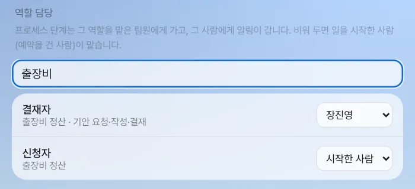
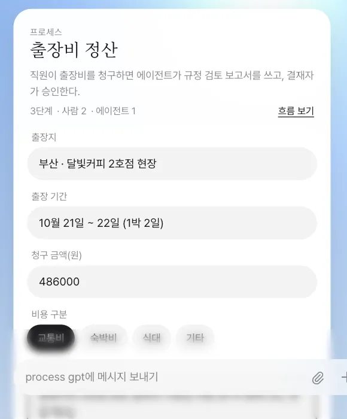
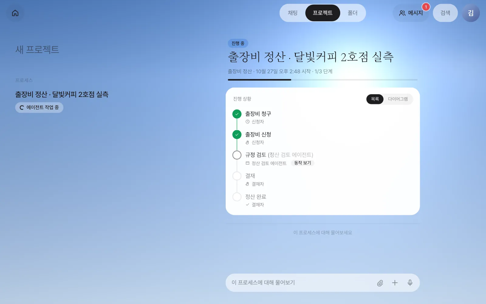
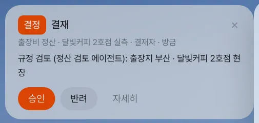
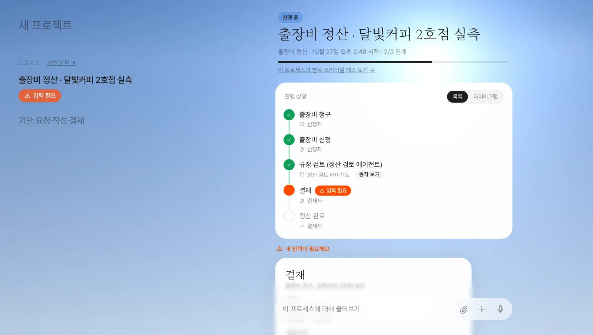
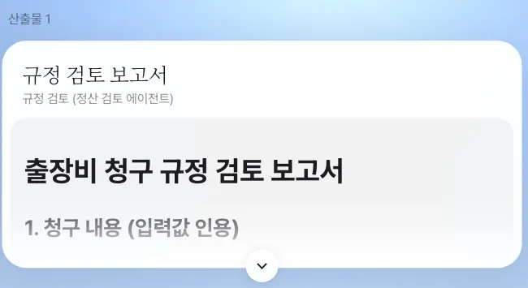

김민지가 달빛커피 2호점 현장 실측 출장비를 청구하면, 정산 검토 에이전트가 규정을 검토하고, 결재자인 장진영 팀장의 홈에 결재 카드가 뜹니다. 역할 지정, 알림, 진행 상황, 산출물, 그리고 “관계된 사람만 본다”는 규칙을 확인합니다.
프로세스가 돌 때 생기는 것#
17장에서 「달빛커피 제안」 프로세스 정의(설계도)를 만들었습니다. 정의를 한 번 시작할 때마다 인스턴스(실행 한 건)가 생깁니다. “출장비 정산”이 정의라면 “출장비 정산 · 달빛커피 2호점 실측”이 인스턴스입니다.
| 생기는 것 | 어디서 보나 |
|---|---|
| 할 일 | 단계마다 그 역할을 맡은 사람(또는 에이전트)에게 갑니다. 사람의 할 일은 홈 카드와 알림으로 뜹니다 |
| 진행 상황 | 「프로젝트」 탭의 인스턴스 화면 — 단계 타임라인, 진행 막대, 다이어그램 |
| 산출물 | 단계가 남긴 보고서·파일. 인스턴스 화면 아래 「산출물」 |
| 기록 | 누가 언제 무엇을 제출했는지. 나중에 병목 분석(20장)의 재료가 됩니다 |
달빛커피 제안은 단계가 많고 에이전트 단계가 오래 걸리므로, 이 장의 실습에는 예제 정의 출장비 정산을 씁니다. 사람 → 에이전트 → 사람으로 이어지는 짧은 흐름이라 한 바퀴를 보기 좋습니다. 김민지가 달빛커피 2호점 현장 실측을 다녀온 출장비를 청구하는 상황입니다. 프로세스 목록에 출장비 정산이 없다면 17장처럼 대화로 같은 흐름(출장비 신청 → 정산 검토 에이전트의 규정 검토 → 결재)을 만들어 써도 됩니다.
| 단계 | 맡는 역할 | 종류 |
|---|---|---|
| 출장비 신청 | 신청자 | 사람 (시작 폼) |
| 규정 검토 (정산 검토 에이전트) | 정산 검토 에이전트 | 에이전트 |
| 결재 | 결재자 | 사람 |
따라 하기 1 — 역할 담당 정하기#
단계는 “사람”이 아니라 역할에 걸려 있습니다. 누가 그 역할을 맡는지는 「설정 › 팀·역할」의 「역할 담당」에서 정합니다. 장진영 팀장 계정에서 찾기 칸에 출장비를 치고, 결재자를 장진영으로 고릅니다. 신청자는 「시작한 사람」으로 둡니다.

역할 담당은 회사 전체 기본값입니다
여기서 정한 담당자는 같은 이름의 역할을 쓰는 모든 프로세스에 적용됩니다. 위 그림처럼 결재자를 장진영으로 정하면 “기안 요청·작성·결재”의 결재도 장진영에게 갑니다. 현재 버전의 화면에는 프로세스별로 따로 정하는 칸이 없으므로, 실습 서버를 여럿이 함께 쓴다면 다른 사람의 실행에도 영향을 준다는 점을 기억하세요.
따라 하기 2 — 김민지가 시작하기#
김민지 계정의 채팅에서 말합니다.
출장비 정산 신청할게요
비서가 등록된 프로세스 중 맞는 것을 골라 프로세스 카드를 띄웁니다. 카드에는 설명, 단계 수(사람 2 · 에이전트 1), 「흐름 보기」, 그리고 첫 단계의 시작 폼이 있습니다.

실습에서 넣은 값:
| 칸 | 값 |
|---|---|
| 출장지 | 서울 성수동 · 달빛커피 2호점 현장 |
| 출장 기간 | 10월 21일 ~ 22일 (1박 2일) |
| 청구 금액(원) | 486000 |
| 비용 구분 | 교통비 |
| 출장 목적 | 달빛커피 2호점 현장 실측과 사장님 미팅 (KTX 왕복 2인, 현장 택시) |
「시작」을 누르면 카드가 「시작됨 · 출장비 정산 · 달빛커피 2호점 실측」으로 바뀝니다. 이 줄을 누르면 인스턴스 화면이 열립니다. 인스턴스 이름(“출장비 정산 · 달빛커피 2호점 실측”)은 입력한 내용으로 저절로 붙습니다.
따라 하기 3 — 에이전트가 일하는 동안#

스피너는 에이전트가 실제로 일하는 동안에만 돕니다. 「동작 보기」를 누르면 에이전트가 무엇을 읽고 어떤 도구를 썼는지 볼 수 있습니다. 실습에서는 1~2분 안에 규정 검토가 끝났습니다.
따라 하기 4 — 결재자에게 간 할 일#
규정 검토가 끝나면 다음 단계(결재)가 결재자 역할의 담당자, 장진영 팀장에게 갑니다. 장진영 팀장 계정의 홈 맨 위에 결정 카드가 뜹니다.

인스턴스 화면에서는 그 단계가 주황색 「입력 필요」로 표시되고, 아래 「내 입력이 필요해요」에 결재 폼이 열립니다.

확인할 것
- 사람 단계에는 스피너가 없습니다. 다른 참여자에게는 담당자 이름과 「진행 중」만 보입니다(16장 회의 자료의 「결재 · 진행 중 · 장진영」).
- 알림은 Process GPT의 알림을 그대로 씁니다. 같은 할 일이 Process GPT 화면의 할 일 목록에도 보입니다.
홈 카드의 「승인」을 누르면 결재가 제출되고, 잠시 뒤 인스턴스가 「완료」가 됩니다. 「반려」를 누르면 반려로 제출되고, 「자세히」는 인스턴스 화면을 엽니다.
16장의 회의에서 본 진행 상황
16장에서 장진영 팀장이 회의 중 “출장비 정산은 어디까지 갔어요?”라고 묻자 도우미가 띄운 것이 바로 이 인스턴스입니다. 그때는 결재 단계가 「진행 중 · 장진영」이었습니다.
따라 하기 5 — 산출물과 완료#
김민지 계정에서 인스턴스를 다시 엽니다. 모든 단계가 초록색으로 바뀌고, 아래에 「산출물」이 생겼습니다.

인스턴스 화면 아래 입력창(「이 프로세스에 대해 물어보기」)은 이 인스턴스 전용 대화입니다. 여기서 물으면 비서가 이 인스턴스의 상태와 산출물을 함께 읽고 답합니다.
누가 인스턴스를 볼 수 있나#
인스턴스는 관계된 사람에게만 보입니다. 시작한 사람, 단계를 맡았거나 맡은 사람, 그리고 관리자입니다.
| 사람 | 출장비 정산 · 달빛커피 2호점 실측 |
|---|---|
| 김민지 (시작) | 보임 |
| 장진영 (결재) | 보임 |
| 박서연 (관계없음) | 「프로젝트」 목록에 없고, 주소로 열어도 “이 프로세스를 볼 권한이 없어요” |
같은 규칙이 회의 자료에도 적용됩니다. 회의 중 도우미가 진행 상황을 띄워도, 그 인스턴스를 볼 수 있는 참여자에게만 보입니다.
에이전트 단계와 사람 단계를 섞는 요령
- 에이전트 단계 뒤에는 사람의 확인 단계를 하나 두세요. 결재·검토처럼 “사람이 고르는 일”을 에이전트에게 맡기지 않는 것이 좋습니다.
- 사람 단계의 폼에는 앞 단계 산출물이 칩으로 붙습니다. 칩을 누르면 검토자 자신의 사본이 열려, 고쳐도 단계의 원본은 그대로입니다.
다음 장으로#
출장비 정산과 17장의 「달빛커피 제안」은 사람이 미리 정의를 만들어 둔 프로세스였습니다. 그런데 회사의 제안 업무는 대부분 정의 없이 메일 한 통에서 시작해 사람마다 조금씩 다르게 처리해 왔습니다. 다음 장에서는 이렇게 즉흥적으로 해 온 일의 기록에서 반복되는 흐름을 찾아내 정식 프로세스로 만드는 프로세스 마이닝을 봅니다(19장).
확인 문제
- 결재자 역할을 비워 두고(「시작한 사람」) 김민지가 출장비 정산을 시작하면 결재는 누구에게 가나요?
- 정산 검토 에이전트가 일하는 동안과 결재를 기다리는 동안, 인스턴스 화면의 표시는 어떻게 다른가요?
- 박서연이 이 인스턴스를 보려면 어떻게 해야 하나요?
답
- 일을 시작한 김민지에게 갑니다. 아무도 맡지 않은 사람 역할은 시작한 사람이 맡습니다(혼자 써 볼 때의 기본값).
- 에이전트가 일할 때는 「에이전트 작업 중」 스피너와 「동작 보기」가 보입니다. 사람을 기다릴 때는 스피너 없이 주황 점과 담당자(내 차례면 「입력 필요」)만 보입니다.
- 인스턴스에 관계된 사람이 되어야 합니다. 예를 들어 결재자로 지정된 상태에서 새 인스턴스의 결재 단계를 맡거나, 관리자가 되면 볼 수 있습니다. 이미 끝난 인스턴스를 공유하고 싶다면 산출물(규정 검토 보고서)을 14장처럼 공유하세요.